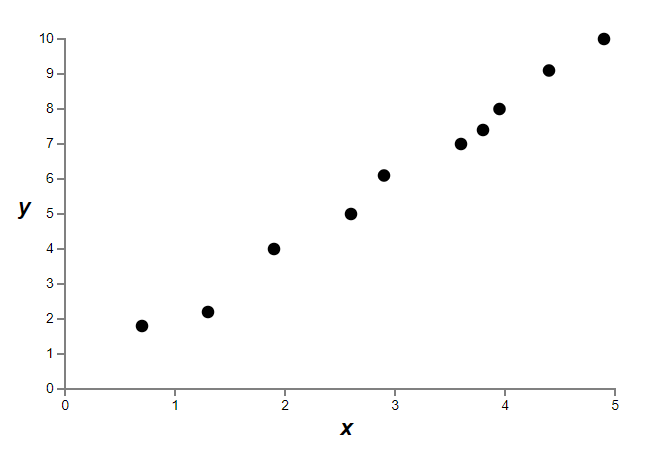
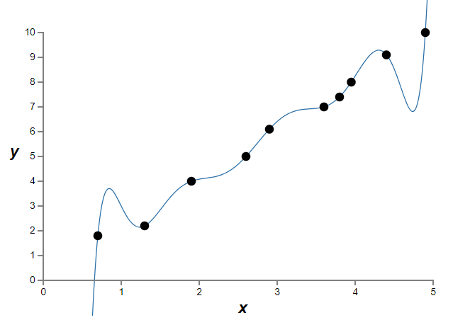
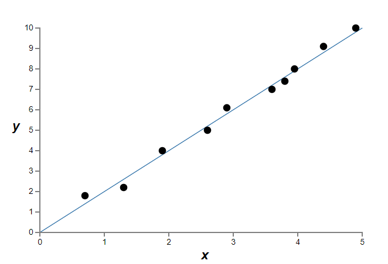

(Regularisation) =
Chapter 15 – Regularisation¶
One method to solve this issue is to punish the big weights. This approach is called the `regularisation’. Here are two basic forms of it:
\begin{equation} L1 ; Regularisation = - \frac{1}{m} \sum^{m}_{i=1}[y_i*ln(\hat{y}_i) + (1-y_i)*ln(1-\hat{y}_i)] + \lambda(|w_1|+…+|w_n|) \end{equation}
\begin{equation} L2 ; Regularisation = - \frac{1}{m} \sum^{m}_{i=1}[y_i*ln(\hat{y}_i) + (1-y_i)*ln(1-\hat{y}_i)] + \lambda(w_1^2+…+w_n^2) \end{equation}
where the higher the constant \(\lambda\) the more we want to punish the bigger weights.
To choose either \(L1\) or \(L2\), we need to think of what we want to achieve. \(L1\) prefers to make the not-too-big weights to be close to zero, creating sparse vectors. This is very efficient when we compute big data where most weights are not important, so it does not make sense if we compute all of them. Sparse vectors in this case improves computational-efficiency.
\(L2\), however, is what we usually use because it reduces the average weight instead of favoring certain small weights.
We can take the following examples to understand the logic behind them. Suppose we have a weight (\(w_1\), \(w_2\)) = (1.5, 0.5), then \(L1\) would tend to make it into (1,0) because \(1.5+0.5 > 1+0\); whereas \(L2\) would make it into (0.75,0.25) because \(0.75^2+0.25^2 < 1^2+0^2 < 1.5^2+0.5^2\). Remember, all we want is to obtain the minimum summation of weights so that we would obtain the minimum cost.
What’s more, L2 regularization doesn’t constrain the biases. Of course, it would be easy to modify the regularization procedure to regularize the biases. Empirically, doing this often doesn’t change the results very much, so to some extent it’s merely a convention whether to regularize the biases or not. However, it’s worth noting that having a large bias doesn’t make a neuron sensitive to its inputs in the same way as having large weights. And so we don’t need to worry about large biases enabling our network to learn the noise in our training data. At the same time, allowing large biases gives our networks more flexibility in behaviour - in particular, large biases make it easier for neurons to saturate, which is sometimes desirable. For these reasons we don’t usually include bias terms when regularizing.
Regularisation also helps to reduce overfitting. We’ve seen empirically that regularization helps reduce overfitting. That’s encouraging but, unfortunately, it’s not obvious why regularization helps! A standard story people tell to explain what’s going on is along the following lines: smaller weights are, in some sense, lower complexity, and so provide a simpler and more powerful explanation for the data, and should thus be preferred. That’s a pretty terse story, though, and contains several elements that perhaps seem dubious or mystifying. Let’s unpack the story and examine it critically. To do that, let’s suppose we have a simple data set for which we wish to build a model:
Implicitly, we’re studying some real-world phenomenon here, with x and y representing real-world data. Our goal is to build a model which lets us predict y as a function of x. We could try using neural networks to build such a model, but I’m going to do something even simpler: I’ll try to model y as a polynomial in x. I’m doing this instead of using neural nets because using polynomials will make things particularly transparent. Once we’ve understood the polynomial case, we’ll translate to neural networks. Now, there are ten points in the graph above, which means we can find a unique 9th-order polynomial \(y=a_0x_9+a_1x_8+...+a_9\) which fits the data exactly. Here’s the graph of that polynomial (figure 1.27).
That provides an exact fit. But we can also get a good fit using the linear model \(y=2x\) (figure 1.28):
Which of these is the better model? Which is more likely to be true? And which model is more likely to generalize well to other examples of the same underlying real-world phenomenon? These are difficult questions. In fact, we can’t determine with certainty the answer to any of the above questions, without much more information about the underlying real-world phenomenon. But let’s consider two possibilities: (1) the 9th order polynomial is, in fact, the model which truly describes the real-world phenomenon, and the model will therefore generalize perfectly; (2) the correct model is y=2x, but there’s a little additional noise due to, say, measurement error, and that’s why the model isn’t an exact fit.
It’s not a priori possible to say which of these two possibilities is correct. (Or, indeed, if some third possibility holds). Logically, either could be true. And it’s not a trivial difference. It’s true that on the data provided there’s only a small difference between the two models. But suppose we want to predict the value of y corresponding to some large value of x, much larger than any shown on the graph above. If we try to do that there will be a dramatic difference between the predictions of the two models, as the 9th order polynomial model comes to be dominated by the \(x_9\) term, while the linear model remains, well, linear.
One point of view is to say that in science we should go with the simpler explanation, unless compelled not to. When we find a simple model that seems to explain many data points we are tempted to shout “Eureka!” After all, it seems unlikely that a simple explanation should occur merely by coincidence. Rather, we suspect that the model must be expressing some underlying truth about the phenomenon. In the case at hand, the model \(y=2x+noise\) seems much simpler than \(y=a_0x_9+a_1x_8+...+a_9\). It would be surprising if that simplicity had occurred by chance, and so we suspect that \(y=2x+noise\) expresses some underlying truth. In this point of view, the 9th order model is really just learning the effects of local noise. And so while the 9th order model works perfectly for these particular data points, the model will fail to generalize to other data points, and the noisy linear model will have greater predictive power.
Let’s see what this point of view means for neural networks. Suppose our network mostly has small weights, as will tend to happen in a regularized network. The smallness of the weights means that the behaviour of the network won’t change too much if we change a few random inputs here and there. That makes it difficult for a regularized network to learn the effects of local noise in the data. Think of it as a way of making it so single pieces of evidence don’t matter too much to the output of the network. Instead, a regularized network learns to respond to types of evidence which are seen often across the training set. By contrast, a network with large weights may change its behaviour quite a bit in response to small changes in the input. And so an unregularized network can use large weights to learn a complex model that carries a lot of information about the noise in the training data. In a nutshell, regularized networks are constrained to build relatively simple models based on patterns seen often in the training data, and are resistant to learning peculiarities of the noise in the training data. The hope is that this will force our networks to do real learning about the phenomenon at hand, and to generalize better from what they learn.
With that said, this idea of preferring simpler explanation should make we nervous. People sometimes refer to this idea as “Occam’s Razor”, and will zealously apply it as though it has the status of some general scientific principle. But, of course, it’s not a general scientific principle. There is no a priori logical reason to prefer simple explanations over more complex explanations. Indeed, sometimes the more complex explanation turns out to be correct.
There are three morals to draw from many of the exceptions (more complex explanation turns out to be correct). First, it can be quite a subtle business deciding which of two explanations is truly “simpler”. Second, even if we can make such a judgment, simplicity is a guide that must be used with great caution! Third, the true test of a model is not simplicity, but rather how well it does in predicting new phenomena, in new regimes of behaviour.